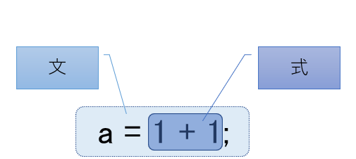

左辺と右辺
変数についてもう少し詳しく見ていきましょう。
前回の記事でプログラミングでは足し算の計算を以下のような文で表現する事を解説しました。
int a;
a = 1 + 1;
これは a という名前の変数に 1 + 1 の計算結果を保持する、という意味です。
「int a」の「int」は数値(integer)を意味している変数の型になります。
変数の型については後の記事で詳しく解説していきますが、数値を代入したい時は int [変数名] と書いて変数を宣言する、と覚えておいてください。
この文に関する疑問点として、式を逆にして書いてはダメなの？というものがあるかと思います。
1 + 1 = a;
これはダメです。
違和感を抱く事は必然的でしょうか。それは学校で習った算数・数学的な計算式の書式が上記の形だからです。7 - 5 = 2とか、10 × 5 + 7 = 57と書きますからね。
まぁはっきり言うと逆で分かりにくいと思います。
しかしこれはプログラミングの業界での標準だと思ってください。
a = 1 + 1;
これがプログラミングのお作法として、正しい「文」になります。
「1 + 1」は「式」なので、「=」(イコール) より右側に書かないといけません。つまり「文」の右側ですね。
|  |
式と文の定義 |
「a = 1 + 1」というのは、変数a に 1 + 1 の結果が代入されるので結論的には a と 1 + 1 が等しいと言えると思います。言い換えるとこの式は「=」によって式の意味合いが強まっていると言えます。
「=」が式の中心人物であり、その右側にある「1 + 1」を「右辺値」、反対側の「a」は「左辺値」と呼ぶ事があります。
「1 + 1」のような式は必ず右辺に書いてください。
よって「1 + 1 = a」のような文は無効となります。
更にプログラミングの式ではこんな風にも書く事ができます。
int a;
a = 1 + 1;
a = a + 2;
a = a + 4;
a = a + 8;
a = a + 16;
a = a + 32;
a = a + 64;
a = a + 128;
a = a + 256;
a = a + 512;
変数については何度でも使い回したり代入する事ができ、更に式の「右辺値」に配置する事もできます。
上記の場合は、数がどんどん倍化されていく例を示しています。最後の文で変数aには 1024 が代入されます。
「ちょっと待って。「a = a + 2」ってどうなってるのこれ・・・？」とお思いかもしれませんが落ち着いてください。一つの文に変数aが複数回登場しているのは紛らわしいですね。
この場合、まず右辺の「a + 2」が先に処理されます。変数a には先の文「a = 1 + 1」で 2 が入っているのでつまるところ「2 + 2」です。その計算結果 4 が 変数a に代入されます。
プログラミングの「制御構造」を使えばもっと簡略化出来るのですが、それについてはもう少し先の記事で解説したいと思います。
変数と定数
変数と相反する存在として定数が存在します。
これは以前の記事で少し触れたかもしれませんが、変数が変化する数字なのに対し、定数は変化しない不変の数字の事です。
「a = 1 + 1」を例にすると、右辺の「1」は定数と言えます。
以下例を挙げてみます。
int a;
a = 1 + 1;
const int b = 3;
a = b + a;
この場合、変数a と 定数b になります。
定数b は代入変数として利用する事はできません。言い換えると定数定義以外において、文の左辺に配置できません。
上記の例文を見てもらうと分かりますが、「int b」という変数宣言と同時に 3 をセットしていますよね。(const は定数(constant)という意味の単語です)
事実として、以下定数bに値を代入する事はできません。
const int b = 0;
b = 3;
「b = 3」は処理できません。これはエラーとなります。
定数は円周率とか消費税率みたいな一定して不変の数値などでよく使われます。
定数はプログラムの中で誤って値が変更されるリスクを無くす意味があります。
変数で取り扱えるデータの種類
ここまでは数字の計算を主に使って変数の説明をしてきましたが、もちろん数字以外の文字も変数に入れる事ができます。
例えば以下のような値です。
char* a;
a = "漢字";
char* b;
b = '1';
漢字のような文字列も変数に代入できます。「char」というのは文字(character)を意味する変数の型になります。
また上記の「"1"」は数字の 1 ではなく文字の 1 です。
当然文字ですから、例え 1 であっても、文字の足し算などはできません。
char* b;
b = '1';
char* c;
c = b + b; ✕ これはできない
コンピュータの世界では、数字と文字は区別されます。
int a;
a = 1; これは数値
char* b;
b = '1'; これは文字
int や char などはデータ型と呼ばれ他にもたくさんあり、今はよく分からないかもしれません。
詳細については別の記事で詳しく解説します。
文字同士の連結であれば、言語によっては可能です。
ここでは分かりやすい構文になっている Java言語 の文字連結を見てみましょう。
String a1 = "プログラミング";
String a2 = "超";
String a3 = "入門";
String b = a1 + a2 + a3;
「String」というのは文字列を保有できるJava言語特有のデータ型です。
最終的に 変数b には「プログラミング超入門」という文字列が代入されます。
Java言語などの比較的最近の高水準言語では文字の取り扱いが簡単にできます。
もちろん他の言語でも文字連結はできるのですが、若干手続きが難しいですかね。
先ほど紹介したダメな例での「c = b + b;」の文字連結はダメ、しかしJavaのString型変数では文字連結ができる理屈ですが、
これはプログラム言語個々の仕様による差です。
ダメな例の言語はC言語を基準にしていますので、C言語で文字連結を行う場合は、別の方法(strcat関数など)を使う必要があります。
もう一つの代表的な変数の型として、論理型と呼ばれる一対の判定フラグのような型があります。
ブール型 (Boolean)とも呼ばれ、この型で定義した変数は真と偽という値を入れる事ができます。
bool a;
a = true;
a = false;
この型は制御構造の「条件分岐」や「繰り返し」などでよく使われます。
この辺りの詳細もデータ型について解説する予定の記事で説明します。
コラム：変数の名前は意味のあるものを付けましょう |
|
|
ここまで説明してきた変数の名前は a や b などありきたりなものでした。 |